Past experiences
Understand the main problems and successes in past cohabitation experiences, to design a more effective matching.
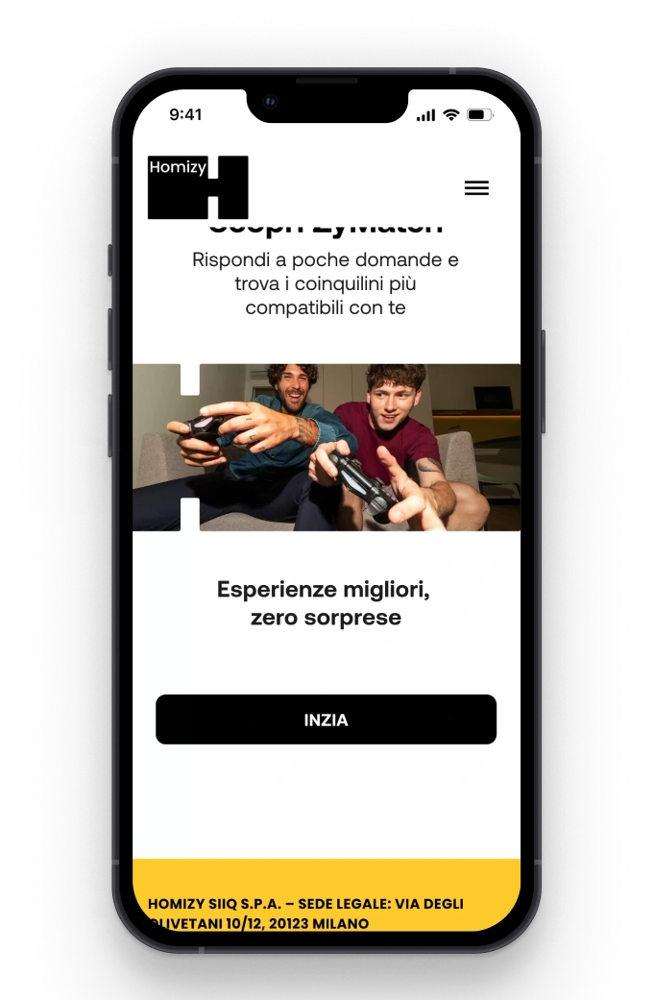
Homizy stems from the need to improve the living experience in coliving environments, focusing on compatibility between roommates and the building of authentic relationships.
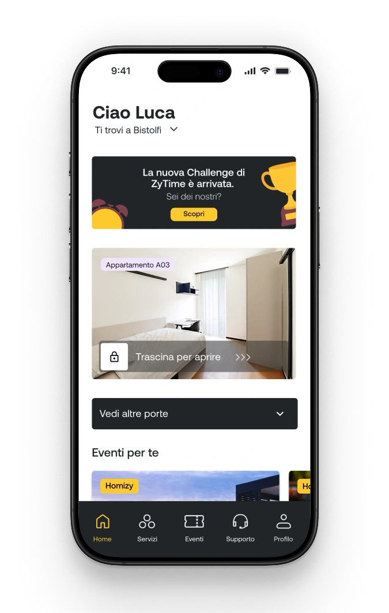
01 — The challenge
Homizy offers a coliving formula built on a social layer. The goal was to design a system that matches people on lifestyle and personality, then helps the community grow once they move in.
Understand the main problems and successes in past cohabitation experiences, to design a more effective matching.
Identify the variables that influence compatibility between housemates and community, understanding what users look for in a potential roommate and/or events.
Understand how having rituals can bring users together.
Explore how users can feel part of a community and which activities, spaces or tools make it easier to create bonds.
02 — Research
survey responses
interviews
competitors analysed
Reddit forums examined
Practical compatibility came first: two thirds of respondents (67%) put it ahead of social compatibility (33%). Schedules, habits and the management of shared spaces mattered more than shared interests. Cleanliness was the top factor (78.6%), followed by personality (53.4%), age (40.8%) and social habits (36.9%).
67% Practical compatibility 33% Social compatibility
Before moving in, people want to know daily routines (65%), alcohol and smoking habits (47.6%) and any special needs (43.7%).
Socially, people are drawn to others through personality, humour and sociability, then shared interests and values. Age plays a secondary role. Many give up on events out of shyness or because they don’t know anyone there.
Seven coliving players were rated from 0 to 3 on six criteria. Community events were well covered almost everywhere, while compatibility profiling was the weakest area: no competitor scored full marks, and two barely covered it at all.
| Competitor | Digital automation | Offer presentation | Match profiling | Community events | Accommodation management | Pricing transparency |
|---|---|---|---|---|---|---|
| Campus | ||||||
| IN-Domus | ||||||
| Colive | ||||||
| Coliving | ||||||
| Habyt | ||||||
| Joivy | ||||||
| CoHabs |
03 — Insights
A community isn’t born just from being in the same place, but from feeling truly welcomed and listened to. Without someone to share them with, even the most interesting experience loses value. It’s not the place or the event that matters, but who you live it with.
10 of 16 interviewees mentioned this topic
People aren’t simply looking for someone to share a home with, but for housemates with whom to build a human, everyday balance, based on emotional and value-based affinities.
10 of 16 interviewees mentioned this topic
A harmonious living situation is based on balance, respect and communication. Clear organisation of the house and shared rules foster harmony and reduce conflicts, because even apparently trivial decisions, like who to invite or how many guests to host, can reveal deep differences in how people live sociability and privacy.
11 of 16 interviewees mentioned this topic
Common spaces are essential because they let people share rituals and activities in daily life. Kitchens, living rooms, terraces and other shared places become natural meeting points, where small everyday gestures strengthen bonds and foster the creation of a real community.
11 of 16 interviewees mentioned this topic
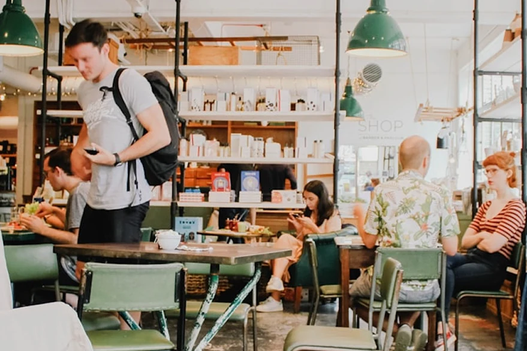
04 — Personas
24 years old
“The energetic organiser”
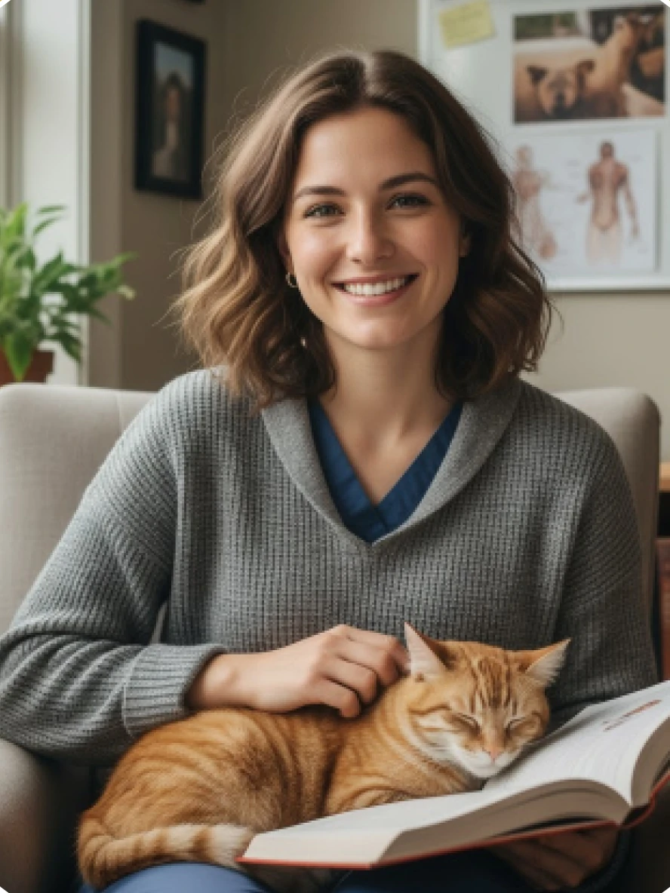
26 years old
“The empathetic, available one”
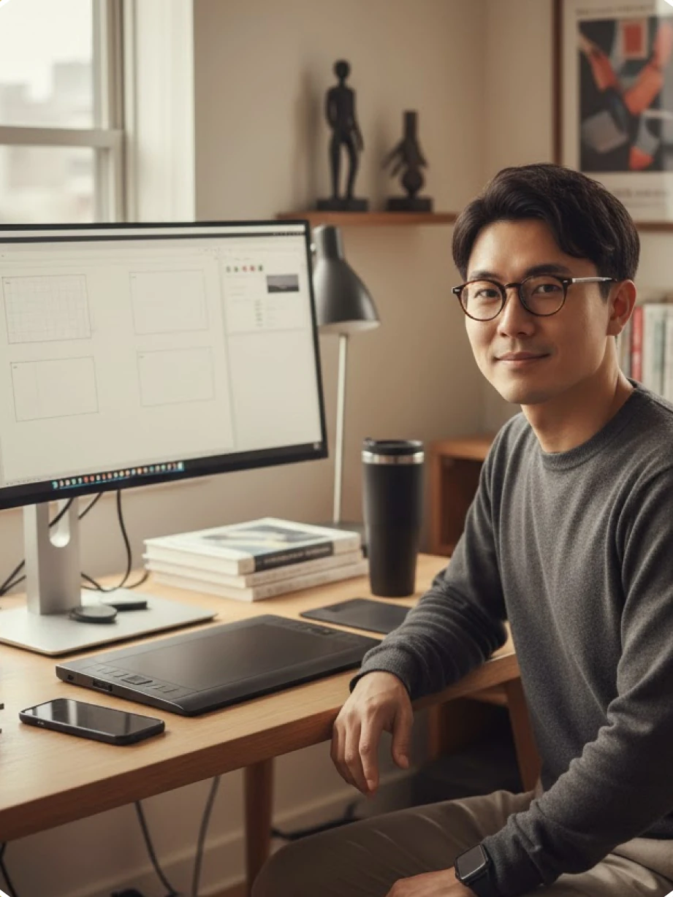
25 years old
“The quiet creative”
05 — Concept & user flows
The journey has five steps: a practical questionnaire, room matching, social questionnaires, a house, and community matching. The practical side lives on the website, the social side in the app.
During website onboarding, fill in a questionnaire based on practical criteria.
Find compatible housemates based on your answers.
In the app, fill in the social questionnaire to find people like you.
The algorithm assigns you to a house in the Homizy community.
Take part in ZyTime, a weekly challenge between the houses of the Homizy community.
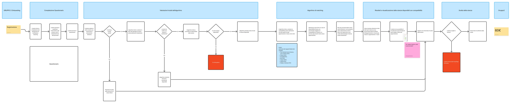
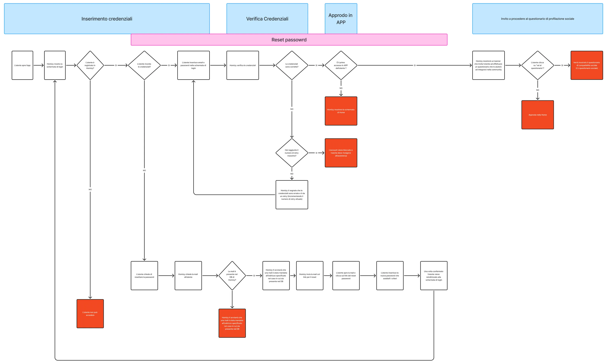
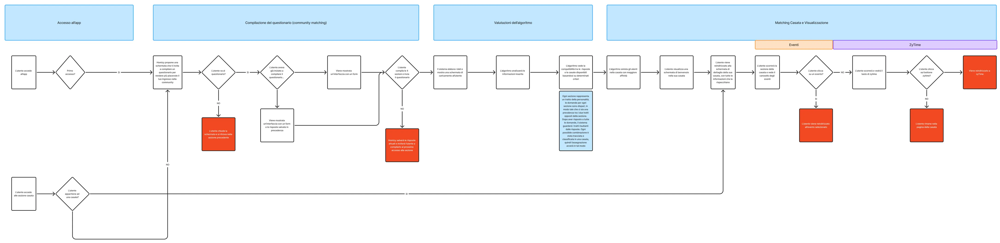
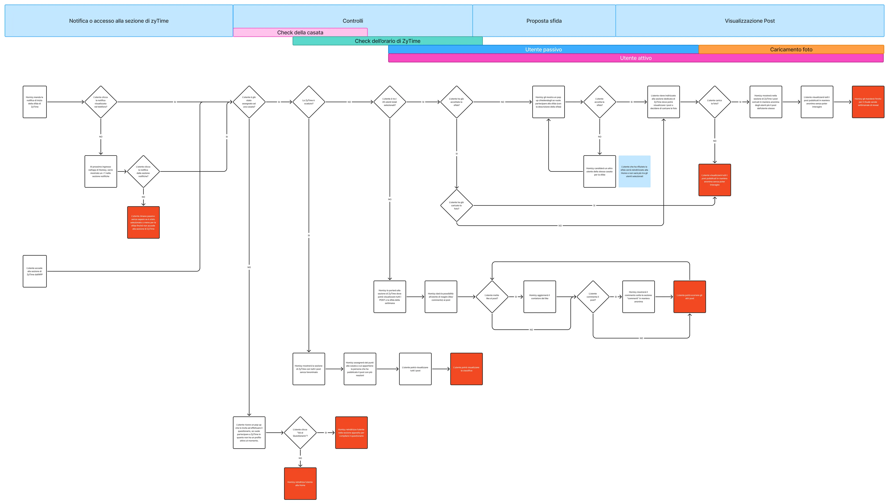
06 — The solution
The practical side of Homizy lives on the website. A compatibility questionnaire evaluates concrete aspects of cohabitation and generates a room matching, suggesting compatible homes and housemates.
Evaluates the concrete aspects of cohabitation.
Room types based on the answers, with details, floor plan and price.
Every room shows its compatibility percentage with the other housemates, broken down by category.
How compatibility is weighted
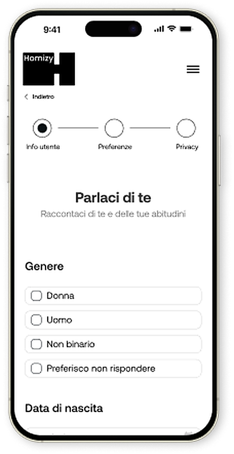
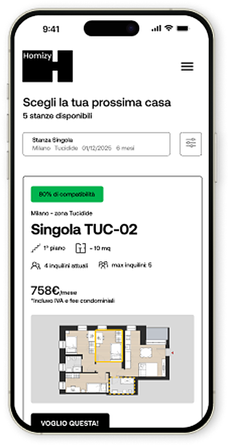
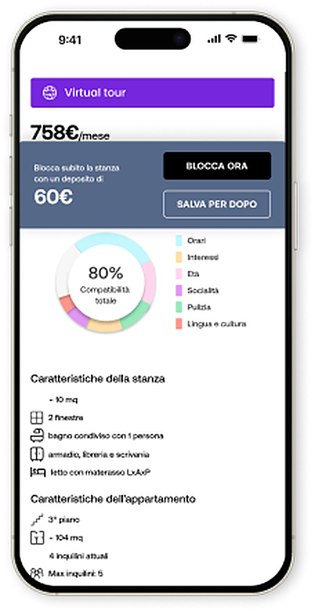
The social side lives in the app. A personality questionnaire assigns each user to a house (Methodicals, Dreamers, Trustworthy, Passionates) to foster belonging and meaningful interactions. Each house reflects a personality profile that emerged from the research.
Analytical and precise. They love order, planning and efficiency; their limit is rigidity.
Deep thinkers with a lucid but chaotic mind. They reflect a lot and find solutions at the last minute.
Guided by the heart, yet drawn to routine and stability. A calm, reliable presence for those around them.
Creative, curious and impulsive. They inspire others with their energy, but may burn out fast.
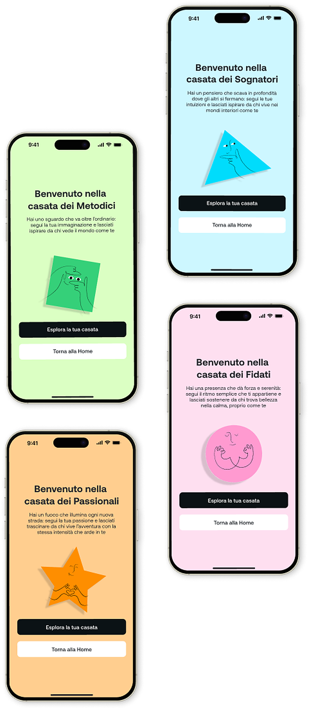
A weekly challenge with a playful theme. Each house takes part, members post their photos and a final ranking rewards the winners, turning shared moments into community.
Every Sunday a new challenge theme is published in the ZyTime section.
A member is selected to represent their house and can accept or decline.
Capture the theme, such as an object that doesn’t belong where it is, and share it in the feed.
The challenge winners and the leaderboard of the houses, with points for each one.
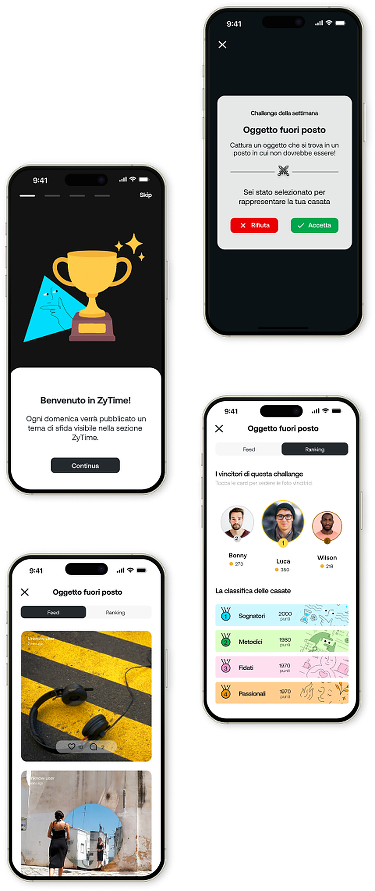
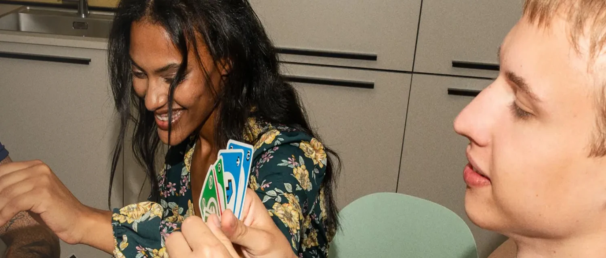
Explore the interactive prototype, or dive into the design file to see components, styles and flows.